Nyaraló Használati, Kulcs- és Zárási Útmutató
🔑 Kulcsok tárolása és logisztikája
- Külső helyiségek (4 kulcsos csomó): Mindig a nyaralóban, a nappali TV alatti asztalon található, a szerszámos kivehető kilincsével együtt.
- Főépület (6 kulcsos csomó): Ezt a csomót mindenki magával viszi, amikor a nyaralóba érkezik.
📥 Nyitási sorrend
- Kertkapu
- Bejárati ajtó
- Kert felőli spaletták, nappali ajtó
- Felső szinten ajtó, spaletta
- Legfelső szinten ajtó, spaletta
- Konyha, mosókonyha, szerszámos (ha kell)
🔒 Zárási sorrend
- Legfelső szinten ajtó, spaletta
- Felső szinten ajtó, spaletta
- Konyha (hűtő kikapcsolása, ha nincs benne semmi)
- Mosókonyha
- Szerszámos (belső függöny behúzása)
- Kert felőli spaletták
- Nappali ajtó
- Bejárati ajtó
- Kertkapu
🛠️ I. Külső Helyiségek (Szerszámos, Konyha, Mosókonyha)
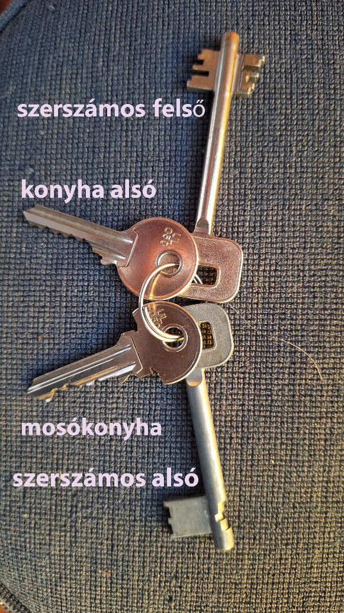
A 4 kulcsos csomó azonosítása és tippek:
-
Mosókonyha kulcs: A különleges fejéről könnyen megismerhető.
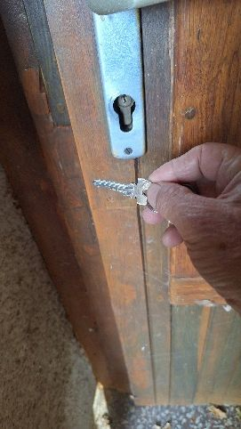
-
Szerszámos felső kulcs: Hosszú szárú, tollas kulcs a szerszámos ajtajához. *(Megjegyzés: A szerszámos alsó zárját ne használjátok, mert nehezen zárható!)*
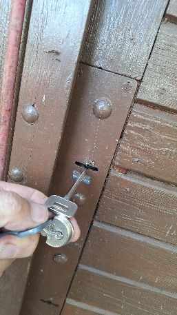
<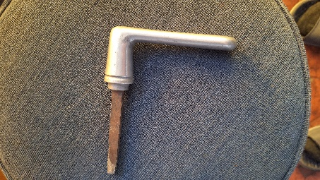
-
Konyha alsó kulcs: Lapos, fogazott cilinderkulcs a konyha ajtajához.
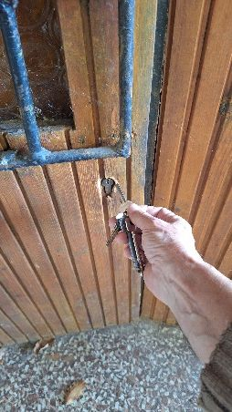
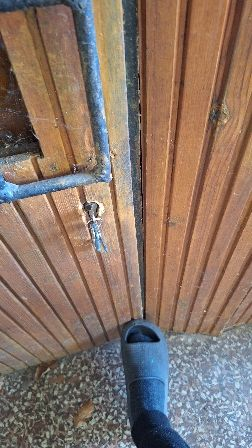
- Szerszámos alsó kulcs: Hosszú szárú kulcs (a zár nehézkessége miatt nem használjuk).
Tipp az azonosításhoz: Az egyforma kulcsokat érdemes kipróbálni / próbálgatni a helyszínen, nincs sok lehetőség.
Helyiségenkénti nyitási és zárási lépések
- Szerszámos: A kulcs mellett egy kivehető kilinccsel is rendelkezik: ezt a megfelelő lyukba kell helyezni és elfordítani a nyitáshoz/záráshoz. Zárás után a kilincset ki kell venni, és vissza kell tenni a TV alatti asztalra. Csak a felső zárat szabad használni a kulccsal.
- Konyha: A konyha alsó kulccsal nyitható/zárható. Záráskor/nyitáskor finoman rá lehet rúgni / lábbal segíteni az ajtó alsó részére, hogy a nyelv könnyen a helyére ugorjon.
- Mosókonyha: A különleges fejéről felismerhető kulccsal működik a cilinderzár.
🏡 II. Nyaraló Főépület (Utcafront, Terasz, Spaletták)
1. A 6 kulcsos csomó azonosítása és tippek:
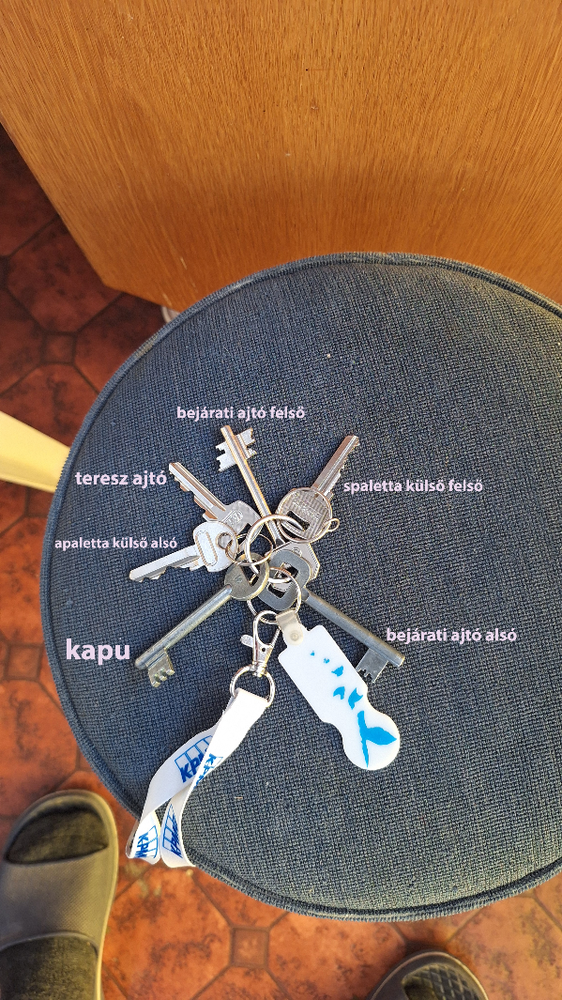
- Kapu kulcs: A gömbölyű fejéről könnyen megismerhető hosszú szárú kulcs a kertkapuhoz.
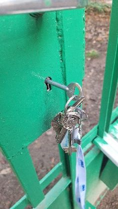
< - Bejárati ajtó felső: Hosszabb szárú tollas kulcs az ajtó felső zárjához.
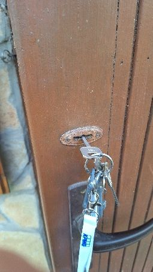
- Bejárati ajtó alsó: Lapos cilinderkulcs az ajtó alsó zárjához.
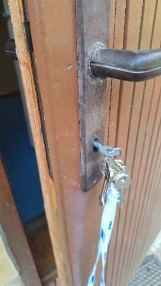
- Terasz ajtó: Rövidebb lapos cilinderkulcs a terasz felőli ajtóhoz.
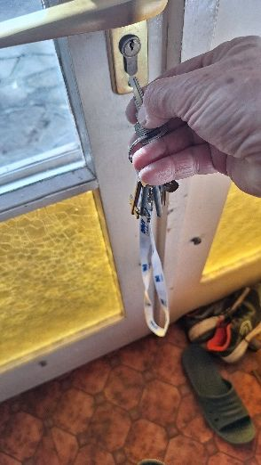
- Spaletta külső felső / alsó: Kisebb tollas kulcsok a spalettákhoz.
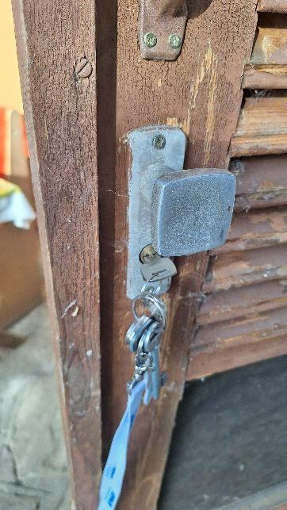
2. Zárási és Biztosítási Lépések
- Bejárati ajtó: Hajtsd be az ajtót, majd a bejárati ajtó alsó és felső kulcsával is zárd le.
- Utcafronti spaletták és ablakok: Ha a spaletták ki vannak nyitva, a szúnyoghálókat kívülről kell rátenni az ablakra, és a spalettákat kívülről egy kampóval kell rögzíteni, hogy ne csukódjanak be.
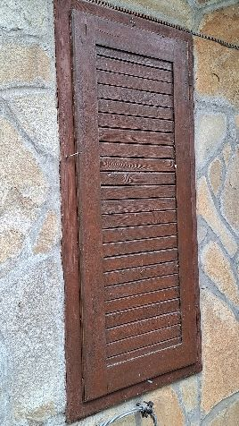
- Kert felőli oldal (Teraszajtó és nagy spaletták):
- Zárd le a teraszajtót a hozzá tartozó kulccsal.
- A nagy, háromszárnyas spaletták zárásának menete: először a bal oldalit kell behajtani és alul reteszelni, majd a belső/másik szárnyat felül lehet reteszelni, végül kívülről (vagy belülről) zárni kell a megfelelő kulcsokkal.
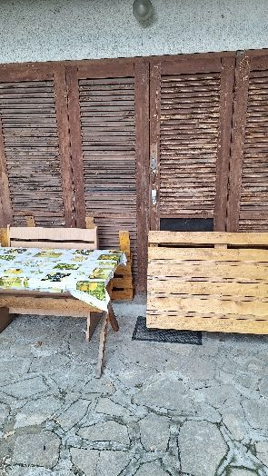
- Zsanérok tehermentesítése: Ha a spaletta ki van nyitva, a szaka alá téglákat kell tenni, hogy ne lógjon, így védve a zsanérokat a terheléstől.
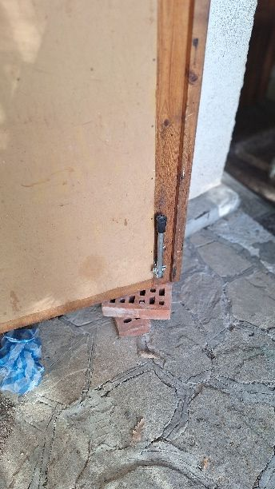
- Az utcafronton minden spalettát be kell csukni.
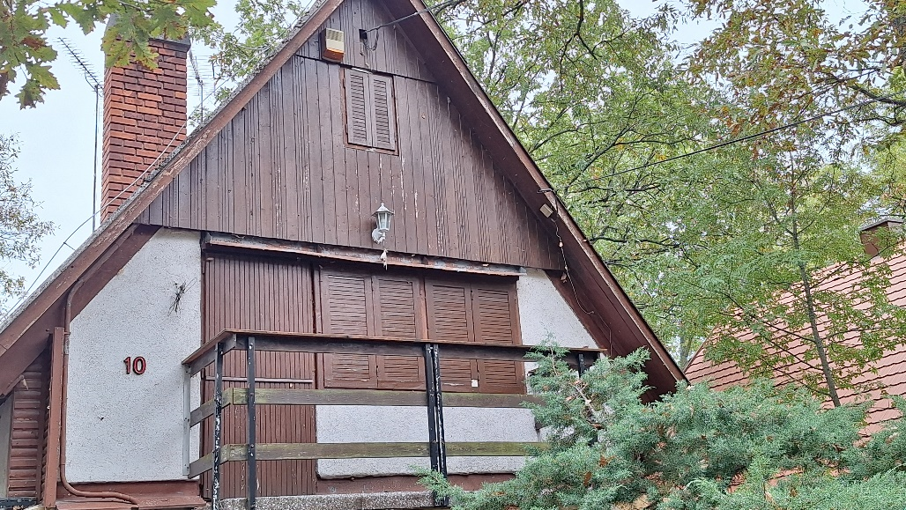
<
💡 Használat: Bármelyik képre kattintva (vagy mobilon megérintve) a fotó nagy méretben, teljes képernyőn megnyílik. A nagy ablak bezárásához bárhová elég kattintani a képen kívül. - Bejárati ajtó alsó: Lapos cilinderkulcs az ajtó alsó zárjához.